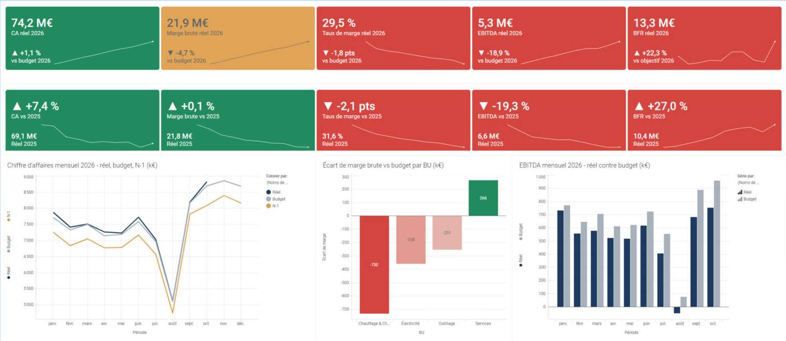
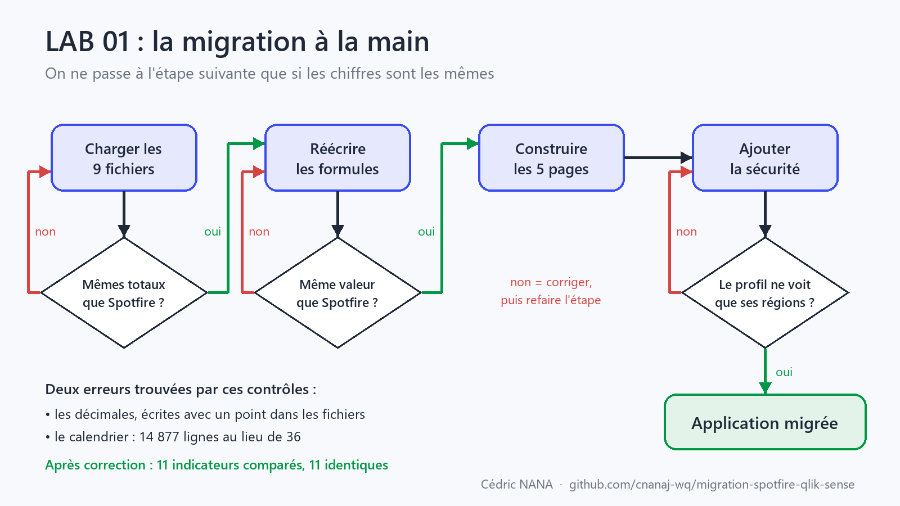
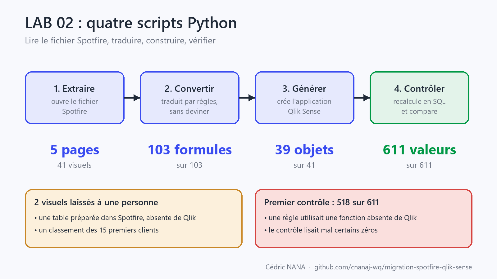
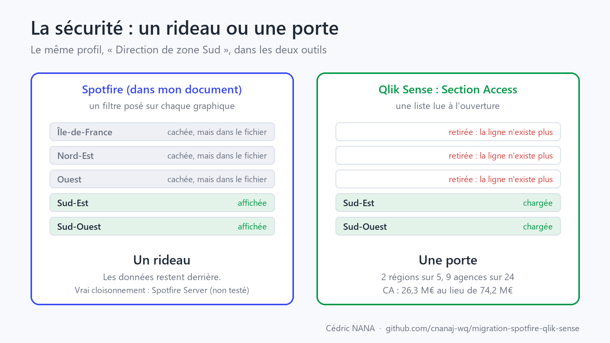
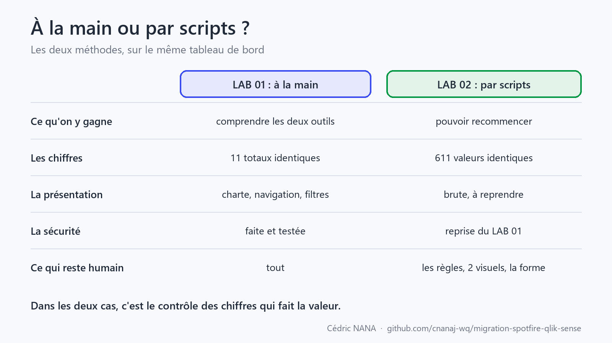

Le rangement des données
Dans Spotfire, 9 fichiers restent 9 tableaux reliés un à un. Dans Qlik Sense, ils forment une grande table centrale entourée de 5 tables de description.
Lab sur données fictives : la société Orvane Distribution n'existe pas.
Un tableau de bord de contrôle de gestion passe de Spotfire à Qlik Sense. Une première fois à la main, pour comprendre. Une seconde fois par scripts Python, pour répéter. Dans les deux cas, chaque chiffre est recompté.
Choisir une page, puis passer d'une version à l'autre. Les chiffres ne bougent pas, la forme oui.

Les deux outils font le même métier avec deux mécaniques. Trois choses changent, et aucune ne se copie.
Dans Spotfire, 9 fichiers restent 9 tableaux reliés un à un. Dans Qlik Sense, ils forment une grande table centrale entourée de 5 tables de description.
Spotfire : « additionne, si c'est 2026 »
Sum(If([Exercice] = 2026 and [Mois] <= 10, [CA Réel]))Qlik Sense : « dans 2026, additionne »
Sum({<Exercice={2026}, [Mois clos]={1}>} [CA Réel])La condition sort de la somme et se lit avant elle. Même résultat, grammaire différente.
Dans Qlik Sense, cliquer sur une région filtre tout l'écran. Dans Spotfire, ce comportement se règle graphique par graphique.
Un départ, une arrivée, deux chemins. Le schéma se parcourt : « Play story » déroule les trois vues, un clic sur une boîte montre ce qui y entre et ce qui en sort.
Ouvrir le schéma en pleine page pour le thème clair, le mode présentation et l'export en image. Les boutons du schéma sont en anglais.
Chaque formule, chaque graphique, chaque couleur est une décision. La règle : ne jamais passer à l'étape suivante sans avoir comparé les chiffres.
11 totaux comparés à Spotfire, 11 identiques.

Quatre scripts font le trajet. Aucun ne devine : une formule qu'aucune règle ne couvre est mise de côté pour une personne.
extraire.py ouvre le fichier Spotfire et fait l'inventaire.convertir.py traduit chaque formule en Qlik et en SQL.generer.py crée l'application et pose les objets.controler.py recalcule chaque chiffre et compare.103 formules traduites sur 103, 39 objets créés sur 41.

Le même tableau de bord, mais chacun n'en reçoit que sa part. Dans Qlik Sense, ce mécanisme s'appelle le Section Access : à l'ouverture, les lignes hors périmètre ne sont pas masquées, elles sont retirées.
chiffre d'affaires visible, cumul 2026 à fin octobre
agences visibles
Périmètres calculés depuis data/securite.csv et data/ventes.csv. Dans l'application, deux profils ont été ouverts et vérifiés : l'administrateur et la Direction de zone Sud. Les noms sont fictifs.
Une liste, dans le script de chargement, dit quelle adresse a droit à quelle région. Qlik reconnaît la personne connectée et retire le reste.
Pas de fonction au nom équivalent dans le document. Un script pose un filtre sur chaque graphique, mais les données restent dans le fichier. Le vrai cloisonnement se fait avec Spotfire Server, non testé ici.
Oublier de s'inscrire soi-même dans la liste ferme l'application à son propre auteur dès le rechargement.

Trois erreurs sont sorties pendant le projet. Aucune n'affichait de message d'erreur : seul un chiffre comparé à un autre les a montrées.
Premier contrôle SQL du LAB 02
518 valeurs identiques sur 611
Après correction de la règle et du script de contrôle
611 valeurs identiques sur 611
Les fichiers écrivent 1234.56 avec un point. Qlik Sense, réglé à la française, attendait une virgule et ne lisait pas des nombres.
La table des mois devait contenir 36 lignes. Elle en contenait 14 877 : une instruction de dédoublonnage mal placée ne dédoublonnait rien.
Une règle traduisait Integer() par une fonction absente de Qlik. Neuf indicateurs étaient touchés.
| Indicateur | Spotfire et fichiers source | Qlik Sense |
|---|---|---|
| Chiffre d'affaires réel | 74 215 646,71 | 74 215 646,71 |
| Chiffre d'affaires budget | 73 426 115,16 | 73 426 115,16 |
| Écart de marge brute au budget | −1 072 496,42 | −1 072 496,42 |
| Encours clients au 31/10/2026 | 14 591 985,68 | 14 591 985,68 |
| CA réel Sud-Est et Sud-Ouest | 26,3 M€ | 26 283 259,77 |
La liste complète est dans correspondances.md, le détail des 611 points dans controle.md.
